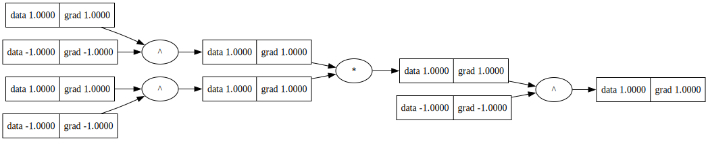

%load_ext autoreload
%autoreload 2
import os
import sys
module_path = os.path.abspath(os.path.join('../')) # or the path
sys.path.append(module_path)
from engine import Bool
import itertools
import pandas as pd
import numpy as npBoolean Variation
BOLD: Boolean Logic Deep Learning introduced a mathematical theory to caculuate graidents on Boolean Variables. Below are some necessary info to realize the truth tables, define a Boolean Deep Learning model, and train the network using Backprop. See the paper for details. The following are taken from the paper.
Boolean Variation
BOLD: Boolean Logic Deep Learning introduced a mathematical theory to caculuate graidents on Boolean Variables. Below are some necessary info to realize the truth tables, define a Boolean Deep Learning model, and train the network using Backprop. See the paper for details. The following are taken from the paper.
Definition
Three-value and Mixed logic
- Define \(\mathcal{M} \equiv \mathcal{B} \cup \{0\}\) with logic connectives defined according to those of Boolean logic as follows.
- First, the negation is: \(\neg True = False\), \(\neg False = True\), and \(\neg 0 = 0\).
- Second, let \(\mathcal{L}\) be a logic connective, denote by \(\mathcal{L}_{\mathcal{M}}\) and \(\mathcal{L}_{\mathcal{B}}\) when it is in \(\mathcal{M}\) and in \(\mathcal{B}\), respectively, then \(\mathcal{L}_{\mathcal{Mb}}(a,b) = \mathcal{L}_{\mathcal{Bb}}(a,b)\) for \(a, b \in \mathcal{B}\) and \(\mathcal{L}_{\mathcal{M}}(a,b) = 0\) otherwise.
- Denote by \(\mathcal{L}\) a logic set (e.g., \(\mathcal{B}\) or \(\mathcal{M}\)), \(\mathcal{R}\) the real set, \(\mathcal{Z}\) the set of integers, \(\mathcal{N}\) a numeric set (e.g., \(\mathcal{R}\) or \(\mathcal{Z}\)), and \(\mathcal{D}\) a certain set of \(\mathcal{L}\) or \(\mathcal{N}\).
- For \(x \in \mathcal{N}\), its logic value denoted by \(x_{logic}\) is given as \(x_{logic} = True \Leftrightarrow x > 0\), \(x_{logic} = False \Leftrightarrow x < 0\), and \(x_{logic} = 0 \Leftrightarrow x = 0\).
- The magnitude of a variable \(x\), denoted \(|x|\), is defined as its usual absolute value if \(x \in \mathcal{N}\). And for \(x \in \mathcal{L}\): \(|x| = 0\) if \(x = 0\), and \(|x| = 1\) otherwise.
- For \(\mathcal{L}\) a logic connective of \(\mathcal{L}\) and variables \(a\), \(b\), operation \(c = \mathcal{L}(a, b)\) is defined such that \(|c| = |a||b|\) and \(c_{logic} = \mathcal{L}(a_{logic}, b_{logic})\).
Calculus
- A variable x is (extended) Boolean variable with the following encoding \(x \in \{-1,0,1\}\) where \(-1\) represents logical \(False\), \(+1\) represents logical \(True\), and \(0\) represents \(Ignore\). We can call this extended Boolean domain.
- Order relations \(<\) and \(>\) in \(\mathcal{B}\) are defined as follows: \(False < True\), and \(True > False\).
- For \(a, b \in \mathcal{B}\), the variation from \(a\) to \(b\), denoted \(\delta(a \to b)\), is defined as: \(\delta(a \to b) \equiv True\) if \(b > a\), \(\equiv 0\) if \(b = a\), and \(\equiv False\) if \(b < a\).
- For \(f \in \mathcal{F}(\mathcal{B}, \mathcal{D})\), \(\forall x \in \mathcal{B}\), write \(\delta f(x \to \neg x) := \delta(f(x) \to f(\neg x))\). The variation of \(f\) w.r.t \(x\), denoted \(f'(x)\), is defined as: \(f'(x) \equiv \text{xnor}(\delta(x \to \neg x), \delta f(x \to \neg x))\).
For simplicity, we will write \(\delta f\) to denote \(\delta f(x \to \neg x)\). Similarly, \(\delta x\) to denote \(\delta (x \to \neg x)\)
For details see, Section 3.2 of BOLD: Boolean Logic Deep Learning
AND Gate
Truth Table
l \(AND(x_1,x_2) \equiv 0\) if any of the inputs are 0, by definition.
Derivative
Recall: 1. \(\delta(a \to b) \equiv True\) if \(b > a\), \(\equiv 0\) if \(b = a\), and \(\equiv False\) if \(b < a\). 2. \(f'(x) \equiv \text{xnor}(\delta(x \to \neg x), \delta f(x \to \neg x))\).
The Truth Table for \(f(x) = f_a(x) = AND(x,a)\) is:
| \(a\) | \(x\) | \(\neg x\) | \(\delta x\) | \(f(x)\) | \(f(\neg x)\) | \(\delta f\) | \(f'\) |
|---|---|---|---|---|---|---|---|
| T | T | F | F | T | F | F | T |
| T | F | T | T | F | T | T | T |
| F | T | F | F | F | F | 0 | 0 |
| F | F | T | T | F | F | 0 | 0 |
Therefore, \(f'_{a}(x) = \text{T} \text{ iff } a=T, 0 \text{ o.w}\)
OR Gate
Truth Table
| \(x_1\) | \(x_2\) | \(y_{OR}\) |
|---|---|---|
| T | T | T |
| T | F | T |
| F | T | T |
| F | F | F |
\(AND(x_1,x_2) \equiv 0\) if any of the inputs are 0, by definition.
Derivative
\(f'_{a}(x) = \text{F} \text{ iff } a=F, 0 \text{ o.w}\)
XOR Gate
Truth Table
| \(x_1\) | \(x_2\) | \(y_{XOR}\) |
|---|---|---|
| T | T | F |
| T | F | T |
| F | T | T |
| F | F | F |
\(XOR(x_1,x_2) \equiv 0\) if any of the inputs are 0, by definition.
Derivative
\(f'_{a}(x) = \neg a\)
AND Gate
# check AND gate. Logic and Derivative
def test_2ary(gate='AND'):
A = [-1,1,0]
X = [-1,1,0]
data = []
for element in itertools.product(*[A,X]):
a,x = element
xb = Bool(x)
ab = Bool(a)
if gate == 'AND':
z = ab*xb
elif gate == 'OR':
z = ab+xb
else:
z = ab^xb
z.backward()
data.append({
'a': a,
'x': x,
'f': z.data,
'f\'': xb.grad
})
df = pd.DataFrame(data)
return df
df = test_2ary()
print(df) a x f f'
0 -1 -1 -1 0
1 -1 1 -1 0
2 -1 0 0 0
3 1 -1 -1 1
4 1 1 1 1
5 1 0 0 0
6 0 -1 0 0
7 0 1 0 0
8 0 0 0 0Can see that \(f'_a(x)\) is \(1\) only when \(a=1\), o.w it is 0.
OR Gate
# check AND gate. Logic and Derivative
df = test_2ary(gate='OR')
print(df) a x f f'
0 -1 -1 -1 -1
1 -1 1 1 -1
2 -1 0 0 0
3 1 -1 1 0
4 1 1 1 0
5 1 0 0 0
6 0 -1 0 0
7 0 1 0 0
8 0 0 0 0Can see that \(f'_a(x)\) is \(-1\) only when \(a=-1\), o.w it is 0.
XOR Gate
# check AND gate. Logic and Derivative
df = test_2ary(gate='XOR')
print(df) a x f f'
0 -1 -1 -1 1
1 -1 1 1 1
2 -1 0 0 0
3 1 -1 1 -1
4 1 1 -1 -1
5 1 0 0 0
6 0 -1 0 0
7 0 1 0 0
8 0 0 0 0Can see that \(f'_a(x)\) is \(\neg a\) and is 0 when a is 0.
Compositions
Chain Rule
For \(\mathcal{B} \overset{f}{\to} \mathcal{B} \overset{g}{\to} \mathcal{D}\): \((g \circ f)'(x) = \text{xnor}(g'(f(x)), f'(x))\), \(\forall x \in \mathcal{B}\).
Multivariate Chain Rule
For \(x = (x_1, \ldots, x_n) \in \mathcal{B}^n\), denote \(x_{\neg i} := (x_1, \ldots, x_{i-1}, \neg x_i, x_{i+1}, \ldots, x_n)\) for \(n \ge 1\) and \(1 \leq i \leq n\).
For \(f \in \mathcal{F}(\mathcal{B}^n, \mathcal{B})\), the (partial) variation of \(f\) wrt \(x_i\), denoted \(f'_{i}(x)\) or \(\delta f(x)/\delta x_i\), is defined as: \(f'_{i}(x) \equiv \delta f(x)/\delta x_i \equiv xnor(\delta(x_i \to \neg x_i), \delta f(x \to x_{\neg i}))\).
Let \(f \in \mathcal{F}(\mathcal{B}^n, \mathcal{B})\), \(n \geq 1\), and \(g \in \mathcal{F}(\mathcal{B}, \mathcal{B})\). For \(1 \le i \le n\),
\[(g \circ f)'_i(x) = \text{xnor}(g'(f(x)), f'_i(x)), \quad \forall x \in \mathcal{B}^n\]
def test_Kary(expression = "x1*x2", K=2):
T = [-1, 1, 0]
# Create the Cartesian product of T repeated K times
cartesian_product = list(itertools.product(T, repeat=K))
# Generate variable names based on the index
variable_names = [f'x{i+1}' for i in range(K)]
data = []
# Print the result with variable names and evaluate the expression
for product in cartesian_product:
# Create a dictionary of variable names and their corresponding values
variables = {variable_names[i]: Bool(product[i]) for i in range(K)}
# Evaluate the expression using the variables
result = eval(expression, {}, variables)
result.backward()
tmp = variables
tmp['f: '+ expression] = result.data
tmp['f\'(x1)'] = variables['x1'].grad
data.append(tmp)
df = pd.DataFrame(data)
return df
expression = "x1 * x2"
K = 2
df = test_Kary(expression=expression, K=K)
print(df) x1 x2 f: x1 * x2 f'(x1)
0 data:-1, grad:0 data:-1, grad:0 -1 0
1 data:-1, grad:1 data:1, grad:0 -1 1
2 data:-1, grad:0 data:0, grad:0 0 0
3 data:1, grad:0 data:-1, grad:1 -1 0
4 data:1, grad:1 data:1, grad:1 1 1
5 data:1, grad:0 data:0, grad:0 0 0
6 data:0, grad:0 data:-1, grad:0 0 0
7 data:0, grad:0 data:1, grad:0 0 0
8 data:0, grad:0 data:0, grad:0 0 0expression = "x1^x2"
K = 2
df = test_Kary(expression=expression, K=K)
print(df) x1 x2 f: x1^x2 f'(x1)
0 data:-1, grad:1 data:-1, grad:1 -1 1
1 data:-1, grad:-1 data:1, grad:1 1 -1
2 data:-1, grad:0 data:0, grad:0 0 0
3 data:1, grad:1 data:-1, grad:-1 1 1
4 data:1, grad:-1 data:1, grad:-1 -1 -1
5 data:1, grad:0 data:0, grad:0 0 0
6 data:0, grad:0 data:-1, grad:0 0 0
7 data:0, grad:0 data:1, grad:0 0 0
8 data:0, grad:0 data:0, grad:0 0 0Can see \(f_a'(x) = \neg a\) and zero whenever any element is 0
Permutation Invariance
abc = cbc a+b+c = c+a+b
K = 3
expression = "x1 * x2 * x3"
df1= test_Kary(expression=expression, K=K)
expression = "x3 * x2 * x1"
df2= test_Kary(expression=expression, K=K)
print(np.all(df1[df1.columns[-1]]==df1[df1.columns[-1]]))
print(np.all(df1[df1.columns[-2]]==df2[df2.columns[-2]]))
expression = "x1 + x2 + x3"
df1= test_Kary(expression=expression, K=K)
expression = "x3 + x2 + x1"
df2= test_Kary(expression=expression, K=K)
print(np.all(df1[df1.columns[-1]]==df1[df1.columns[-1]]))
print(np.all(df1[df1.columns[-2]]==df2[df2.columns[-2]]))True
True
True
True# check composition
a = Bool(-1);b = Bool(1);c=Bool(1)
z = b^a+c
z.backward()
print('xor(a,b)\n', z,a,b,c)xor(a,b)
data:-1, grad:1 data:-1, grad:0 data:1, grad:-1 data:1, grad:1# check composition
from engine import Bool
from utils import draw_dot
y = Bool(-1);
x1 = Bool(1); x2 = Bool(1)
w1 = Bool(-1); w2 = Bool(-1);
h1 = x1^w1
h2 = x2^w2
z = h1*h2
L = z^y
L.backward()
draw_dot(L)